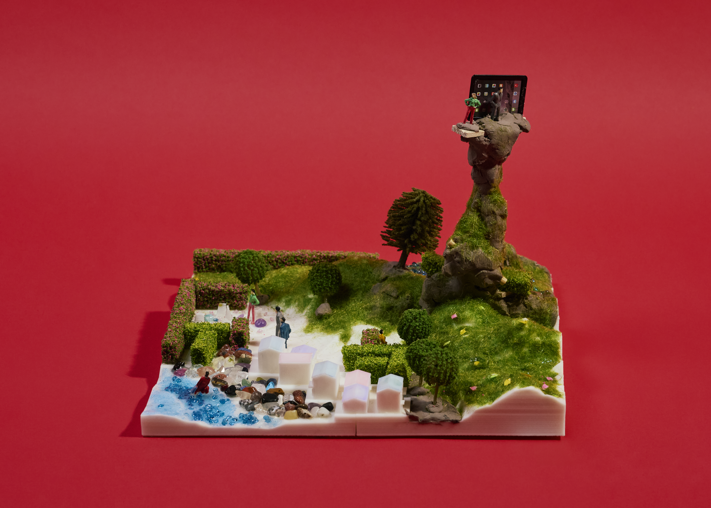
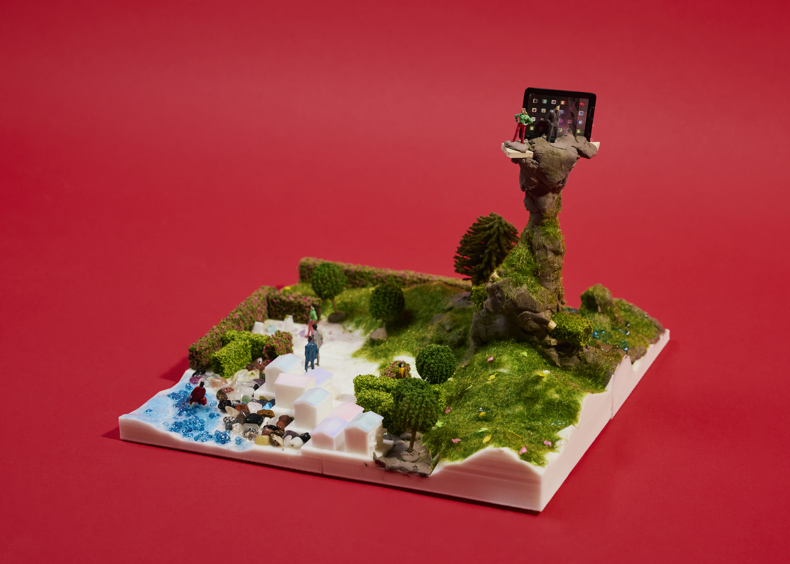

제2구역: Home Sweet Home
지구인 분석 결과
1. 지구인은 기술과 타인에 의존적이다. 항상 인터넷으로 타인과 연결되어 있기 때문에 연결이 끊겼을 때 약해진다.
2. 지구인은 중독에 취약하다. 물리적인 교류가 적기 때문에 자기의 반복적인 행동에 갇히기 쉽고, 무언가에 중독되기 쉬운 환경에 놓이게 된다.
3. 지구인은 욕구와 욕망이 강하다. 인간은 자신이 처한 상황에 만족할 줄 몰라, 화성을 침략하는 것으로 보인다.
화성인으로서의 입장
화성인들은 지구인들의 침략 가능성이 가장 큰 위협이기 때문에 지구인의 높은 환경 의존성을 역이용해 안락한 환경을 제공하고 의존성을 형성한다. 이후 이를 통제함으로써 침략을 사전에 억제하는 전략을 선택했다.
전략명: Home Sweet Home
1. 지구인들 간의 접촉을 제한하기 위해 지구인들은 모두 화성인의 집에 거주하게 한다.
2. 화성인들은 지하 통로를 통해 매일 밤 모여 지구인 종속화 전략에 대해 토의한다.
3. 관광 명소를 가장한 마천루는 사실 감시탑으로 기능한다.
4. 말라붙은 바닷가는 지구 어디에도 없는 환상적인 경관을 자랑한다. 바다를 응시하는 것 만으로도 지구인은 아주 큰 행복을 느낀다.
5. 지구인들은 금빛 과실밭을 매일 산책하며 과실을 하나씩 따 먹는다. 금빛 과실은 미뢰를 극도로 자극하여 이를 섭취하는 이들은 다른 음식의 맛을 더 이상 느끼지 못하게 된다.
곡 제목: Home sweet home
오늘도 반짝반짝 금빛 열매 하나,
웃으며 한입 베어 물면 세상이 달콤해.
푸른 바다 바라보면 걱정은 저 멀리,
우리 집이 제일 좋아, 여기면 충분해.
손을 흔들며 산책해요, 매일 같은 길로,
어제 일은 바람 따라 살며시 흘려보내.
생각보다 노래해요, 노래하면 행복해.
행복은 가까이에, 행복은 지금 여기에